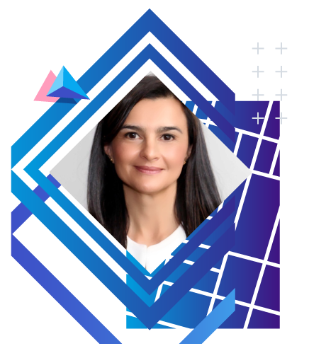

Bienvenidos
Este es
El primer paso
hacia una ciudad
inteligente
El Foro "El poder de los datos geográficos en Bogotá”, es un encuentro organizado por la Unidad Administrativa Especial de Catastro Distrital (UAECD), coordinadora de la Infraestructura de Datos Espaciales para el Distrito Capital (IDECA), con el propósito que las Entidades de la Administración Distrital, la academia y organizaciones privadas puedan intercambiar experiencias que evidencien la importancia, potencial, uso y valor que tienen los datos en los diferentes sectores de la sociedad.
Además, es un espacio para desarrollar competencias en los servidores públicos, quienes podrán comprender a través de las diferentes ponencias y estudios de caso, la aplicación de analítica de datos, BlockChain y otras tecnologías en proyectos desarrollados con enfoque geográfico, convirtiéndose en instrumentos enriquecedores para conocer estrategias que permitan la explotación e innovación basada en los datos, y así contribuir con la construcción conjunta de Bogotá como ciudad inteligente.
¡Anímate a
participar, no te lo pierdas!
Expositores


Juanita Rodríguez Kattah
Ex-Viceministra de Economía Digital del Ministerio de
Tecnologías de la Información y las Comunicaciones (MinTIC)
Más Información


Presentaciones
Olga Lucía López M - Logros y Perspectivas de IDECA
Juanita Rodríguez Kattah - Ciudad digital y Ciberseguridad
Elizabeth Blandón - Datos Abiertos Habilitando Ciudades Inteligentes
Sergio Martinez Medina - Estrategía de Datos Abiertos
Liliana Alfonso Puin - GeoAnalytics Aplicada
Sergio Gutiérrez Bonnet - Transformando el gobierno con el poder de los datos
Mauricio Tóvar - Blockchain y Registro de Tierras
Juliana Galvis - Periodismo de Datos
Jaime Torres-Melo - Tablero de Control Ciudadano
Carlos Lugo - Ruta para El Desarrollo Digital
Javier Torres Páez - Nuevo Esquema de Basuras
Olga Lucía Sarmiento - Level of Traffic Stress
Carlos Gustavo Infante - Tecnologías Geoespaciales en la Gestión Catastral